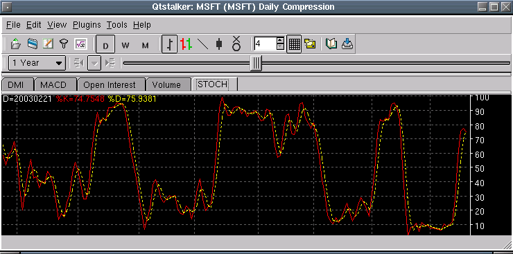

Stochastic Oscillator - STOCH

Parameters:
- %D Color - %D color
- %D Line Type - %D line type
- %D Label - The text to identify the %D plot
- %D Smoothing - %D smoothing period
- %K Color - %K color
- %K Line Type - %K line type
- %K Label - The text to identify the %K plot
- %K Smoothing - %K smoothing period
- Buy Line - Buy signal threshold
- Sell Line - Sell signal threshold
- Period - STOCH period
- Smoothing Type - Smoothing type to use on %D, %K plots
Description: